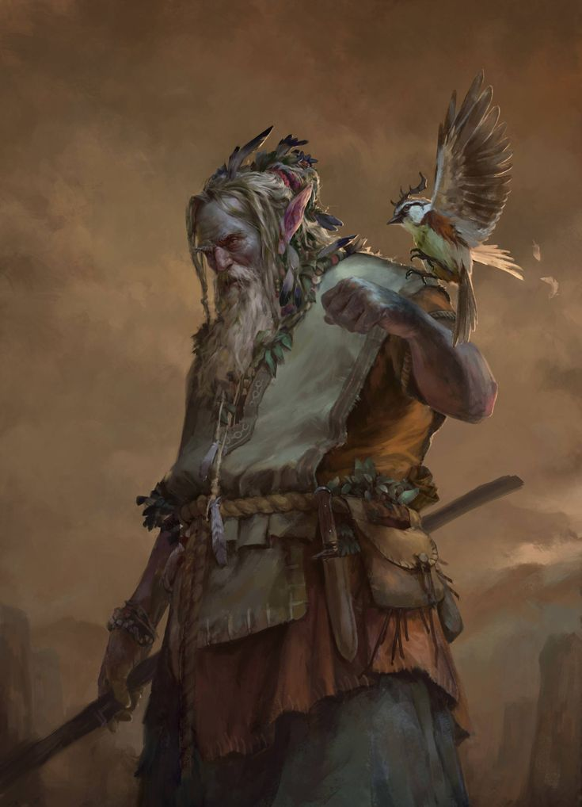

Ambre Onzdem
Personnage¶
Race : Firbolg
Classe : Martyr
Niveau : 1 (BM +2)
Points de vie : 16
Vitesse : 30 ft.
| FOR | DEX | CON | INT | SAG | CHA |
|---|---|---|---|---|---|
| 6 (-2) | 9 (-1) | 18 (+4) | 7 (-2) | 12 (+1) | 6 (-2) |
| ◉ ±0 | ◎ (-1) | ◎ +4 | ◎ -2 | ◉ +3 | ◎ -2 |
| Compétences | |
|---|---|
| ◎ Acrobaties (Dex) : -1 | ◎ Investigation (Int) : -2 |
| ◎ Arcanes (Int) : -2 | ◉ Médecine (Sag) : +3 |
| ◎ Athlétisme (For) : -2 | ◎ Nature (Int) : -2 |
| ◎ Discrétion (Dex) : -1 | ◎ Perception (Sag) : +1 |
| ◎ Dressage (Sag) : +1 | ◎ Persuasion (Cha) : -2 |
| ◎ Escamotage (Dex) : -1 | ◉ Religion (Int) : ±0 |
| ◉ Histoire (Int) : ±0 | ◎ Représentation (Cha) : -2 |
| ◎ Intimidation (Cha) : -2 | ◎ Survie (Sag) : +1 |
| ◉ Intuition (Sag) : +3 | ◎ Tromperie (Cha) : -2 |
Fiche récapitulative pour ceux qui ont la flemme (Merci Gemini !)
Vous êtes Ambre, un ancien firbolg quasi-immortel venu du Plan Astral, dont le corps incroyablement résistant mais physiquement faible a servi de réceptacle à la souffrance d'un dieu mort pendant des siècles, et qui cherche maintenant une nouvelle "cause" pour laquelle souffrir dans le monde matériel.
Objectif pour la session :
Votre mission divine est de soulager la souffrance. Vous êtes instinctivement attiré par les situations de détresse. Votre but est simple : trouver ceux qui souffrent, vous placer entre eux et la source de leur douleur, et absorber le mal à leur place, car c'est la seule chose pour laquelle vous avez été créé.
Jouez la Lutte contre la Gravité : Votre corps est une prison de faiblesse. Bougez lentement, appuyez-vous sur les murs ou sur votre bâton. Décrivez l'effort que représente chaque action physique. En revanche, mettez en avant votre endurance surnaturelle : vous êtes le dernier debout dans une tempête de neige, vous haussez à peine un sourcil face à un poison mortel.
L'Émerveillement de l'Étranger : Le monde matériel est une découverte de chaque instant. Soyez fasciné par les choses les plus simples : le goût de l'eau, la texture de la mousse, la chaleur du soleil. Posez des questions naïves sur des concepts évidents pour les autres, avec une sérénité et une sincérité désarmantes.
Le Martyr Silencieux : Votre instinct est le sacrifice. Vous êtes un bouclier humain (ou plutôt, firbolg). Votre première réaction face au danger n'est pas d'attaquer, mais de vous interposer. Parlez calmement, par proverbes sacrés (même si vous les inventez à moitié), et acceptez la douleur avec une paix intérieure qui déconcertera vos alliés et vos ennemis.
Maîtrises¶
Armure : Armures Légères, Armures Moyennes, Boucliers
Armes : Armes Simples, Armes Martiales
Outils : —
Langues : Commun, Primordial, Céleste, Nain
Description¶
Âge : ?? ans (Apparence de 35 ans)
Taille : 2,10 m
Poids : 110 kg
Ambre est une silhouette à la fois imposante et paradoxale. Bien qu'il soit d'une taille spectaculaire, même pour un firbolg, il n'a rien de la carrure massive que l'on attendrait. Il est élancé, presque fragile, avec de longs membres fins qui semblent mal à l'aise avec la lourdeur de la gravité.
Son visage, d'une sérénité surnaturelle, est presque entièrement caché par une barbe incroyablement touffue et sauvage. Contrairement à ce que sa faible constitution pourrait laisser penser, sa barbe a poussé avec une vigueur anarchique durant sa longue veille, formant une épaisse broussaille d'un blanc pur qui rappelle celle des plus vieux maîtres artisans nains. Cette masse de poils indisciplinés dévale sa poitrine, un souvenir vivant des siècles passés en stase, sans jamais un peigne ou une lame pour la dompter.
De cette toison faciale émergent deux yeux d'un violet profond et brumeux, qui paraissent absorber la lumière et qui trahissent un calme insondable. Sa peau est d'une pâleur de nacre, parcourue de fines lignes argentées, presque invisibles, comme des fissures dans du marbre.
Ambre porte une cotte d'écailles d'une matière inconnue. Chaque écaille, de la taille d'une paume, semble taillée dans un cristal laiteux ou une pierre astrale qui capte la lumière de manière étrange. L'armure couvre son torse et ses épaules, et bien qu'elle paraisse solide, elle semble aussi légère qu'un vêtement de tissu, comme si son poids était annulé par sa nature extraplanaire.
Il se déplace avec une lenteur délibérée, s'appuyant souvent sur un simple bâton de bois, et donne toujours cette impression d'un être incroyablement ancien et puissant, piégé dans un corps physiquement faible, dont la seule vigueur semble s'être concentrée dans sa barbe indomptable.

Aptitudes¶
Aptitudes de Race¶
Magie Firbolg. Vous pouvez lancer les sort Détection de la Magie et Déguisement avec ce trait. Lorsque vous utilisez cette version de Déguisement, vous pouvez apparaître comme 3 ft. plus grand ou plus petit. Une fois que vous avez lancé n'importe lequel de ces sorts avec ce trait, vous ne pouvez pas relancer ce sort avec ce trait tant que vous n'avez pas fini un repos long. Vous pouvez également lancer ces sorts en utilisant des emplacements de sort classiques. Votre caractéristique d'incantation pour ces sorts est la Sagesse.
Pas Caché. Pour une action visible, vous pouvez magiquement devenir invisible jusqu'à la fin de votre prochain tour, ou jusqu'à ce que vous attaquiez, réalisiez un jet de dégâts, ou forciez quelqu'un à réaliser un jet de sauvegarde. Vous pouvez utiliser ce trait un nombre de fois égal à votre bonus de maîtrise, et vous regagnez toutes les utilisations après un repos long.
Carrure Imposante. Vous êtes considéré comme d'une taille plus grande lorsque vous déterminez le poids que vous pouvez porter, tirer, soulever.
Dialogue de la Bête et de la Feuille. Vous avez la capacité de communiquer légèrement avec les Bêtes, Plantes et la végétation. Ils peuvent comprendre le sens de vos mots, même si vous n'avez pas de disposition particulière à les comprendre en retour. Vous avez l'avantage à tous les jets de Charisme que vous réalisez pour les influencer.
Aptitudes de Classe¶
Mort Ordinée¶
En tant que Martyr, vous avez été prédestiné par les dieux à périr pour une cause supérieure ; il n'y a plus de gloire plus grande que cette mort, et pas de joie plus importante après. Cependant, il n'est pas encore l'heure. Dès le niveau 1, lorsque vous tombez à 0 points de vie et commencez à faire des jets de sauvegarde contre la mort, il vous faut 5 échecs pour mourir. De plus, si un sort a seulement l'effet de vous ramener à la vie (mais pas en tant que mort-vivant), le lanceur n'a pas besoin de composantes matérielles pour le lancer sur vous.
Cantrips¶
À partir du niveau 1, votre mission divine vous octroie une once de magie divine. Ainsi, vous apprenez les cantrips Stabilisation et Thaumaturgie et Breuvage Légendaire. Vous ne perdez pas de points de vie lorsque vous lancez ces sorts. La Sagesse est votre caractéristique d'incantation pour ces sorts.
Baume¶
Vous pouvez utiliser une action bonus pour restaurer 1 point de vie à une créature à 60 ft. de vous ou retirer la condition aveuglé, assourdi ou empoisonné d'une créature consentante que vous touchez.
Une fois que vous avez utilisé cette aptitude, vous ne pouvez pas la réutiliser jusqu'à ce que vous finissiez un repos court ou long.
Équipement¶
- Une épée courte et un Bouclier
- Un bâton
- Une armure d'écailles
- Une arbalète légère et 20 carreaux
- Un sac d'ecclésiastique
- Un morceau de cadavre de dieu, vous servant de symbole sacré
- Un journal, de l'encre, un stylo
- 10 Pièces d'Or
Historique¶
Ambre n'a pas connu le contact de l'herbe sous ses pieds ni la caresse du vent sur sa peau. Son premier souvenir est le silence argenté et infini du Plan Astral. Il est né au sein d'une enclave de firbolgs unique, un clan dont le devoir sacré se transmettait depuis des générations : veiller sur le cadavre d'un dieu.
Au cœur d'une nébuleuse opalescente flottait le corps d'un titan de pierre endormi, une divinité oubliée de l'Endurance et du Sacrifice. Bien que mort, le dieu n'était pas en paix. Son corps astral saignait une énergie psychique pure, un torrent de pensées brutes, de regrets et de courage qui, sans contrôle, aurait pu déchirer le voile entre les mondes. Les firbolgs de l'enclave étaient les Gardiens du Silence, leur unique but étant de contenir cette hémorragie divine.
Pour ce faire, ils désignaient un "Vaisseau". Un volontaire, choisi pour sa pureté d'esprit, qui servirait de conduit pour absorber et apaiser l'énergie chaotique. Ambre fut cet élu.
Pendant une durée qu'aucun calendrier ne pourrait mesurer, sa vie fut une stase méditative. Flottant en apesanteur dans la lueur du dieu mort, il était un paratonnerre pour une tempête d'âmes. Il n'endurait pas une douleur physique, mais une symphonie de chaos : la tristesse de mille batailles perdues, la fureur de la trahison, l'agonie de la solitude. Pour survivre, son esprit a appris une sérénité absolue et son corps a développé une constitution presque divine. Mais n'ayant jamais eu à lutter contre la gravité ou à exercer le moindre effort, ses muscles se sont étiolés, devenant les appendices inutiles d'un être conçu pour la seule endurance.
Puis, lentement, le bourdonnement psychique qui avait été la bande-son de son existence commença à faiblir. La tempête s'apaisait. Un jour, après une éternité de service, le dernier écho de la conscience du dieu s'éteignit dans un ultime soupir de paix. Le silence qui suivit fut plus assourdissant que tout le chaos qui l'avait précédé.
Sa mission était terminée. Les anciens de son clan s'approchèrent de lui et lui expliquèrent que son Fardeau Mortel entrait dans sa phase finale. Le dieu, dans son dernier acte, l'avait ordonné son Martyr. Sa tâche n'était plus de contenir la souffrance, mais de la soulager. Il devait être envoyé dans le plan matériel pour y incarner le dernier idéal de son dieu : la Pitié.
Son arrivée fut une naissance violente. Le portail le projeta dans une forêt verdoyante, et pour la première fois, il sentit la gravité. Ce fut une force brutale, invisible, qui l'écrasa au sol. Le poids de ses propres os était une torture. L'air, plein d'odeurs de terre humide et de décomposition, était une agression. Chaque son, chaque couleur était une attaque contre des sens habitués au silence et à l'argent.
Il apprit à marcher, chaque pas étant un effort herculéen pour son corps affaibli. Mais alors qu'il errait, il sentit une nouvelle sorte d'écho. La douleur d'un animal pris dans un piège, la tristesse d'un enfant perdu, la peur d'un village menacé par des bandits. Ces souffrances, si petites comparées à celles de son dieu, l'appelaient. Un instinct plus fort que tout le poussait à se placer entre la douleur et la victime, à offrir son corps incroyablement résistant comme un bouclier.
Ambre, le Vaisseau du Vide, est maintenant un Martyr en quête de cause. Il parcourt ce monde étrange et lourd, non pas pour trouver le bonheur, mais pour trouver un fardeau digne d'être porté. Il cherche des compagnons, une "meute", dont il pourra absorber la douleur, car un être façonné pour le sacrifice ne trouve son but que lorsqu'il a tout à perdre pour les autres.
Aptitude d'Historique¶
Votre esprit et votre corps sont saturés par la volonté rémanente du dieu mort. Vous avez l'avantage à tous les jets de sauvegarde pour ne pas être apeuré, charmé ou sonné. De plus, lorsque vous devez faire un jet de sauvegarde de Constitution pour maintenir votre concentration sur un sort, vous pouvez considérer tout résultat de 9 ou moins sur le dé comme un 10.
Traits de Personnalité¶
Traits : Je vois des signes dans la moindre action. Les dieux nous parlent et il nous faut les écouter. Je cite (parfois à tort) souvent les textes sacrés et les proverbes de ma foi.
Idéal : Les anciennes traditions de vénération et de sacrifice doivent être préservées et respectées.
Lien : Je ferai n'importe quoi pour accomplir la mission donnée par mon dieu.
Défaut : Je suis inflexible dans ma façon de penser.
Alignement : Loyal Bon
Conseils de Jeu¶
Sa voix est douce, presque un murmure, avec de longues pauses entre les mots, comme si le simple fait de parler était un effort. Il utilise un vocabulaire philosophique et abstrait, mais peut poser des questions d'une simplicité enfantine sur le monde physique. "Cette sensation… le vent… quelle est sa cause ?". Il parle dans un langage très propre, sans utiliser de contractions ou d'argot. Il dit "Je ne sais pas" plutôt que "J'sais pas".
Il s'appuie souvent contre les murs, les arbres, ou même ses compagnons. Quand il s'assied, c'est avec un soupir de soulagement palpable. Il peut s'arrêter net au milieu d'une phrase pour toucher une fleur, regarder la pluie tomber, ou fixer la flamme d'une bougie avec une admiration intense. Ce sont des choses nouvelles pour lui.